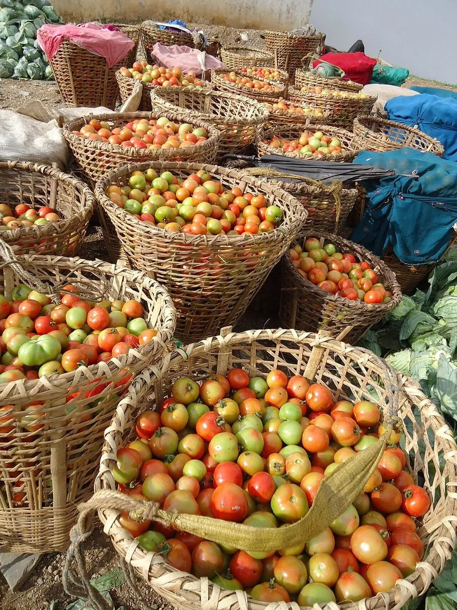
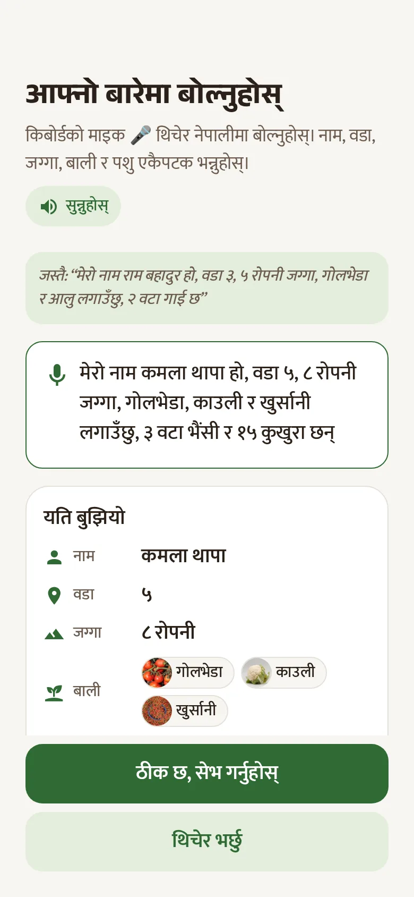
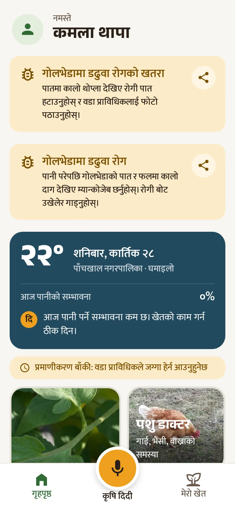
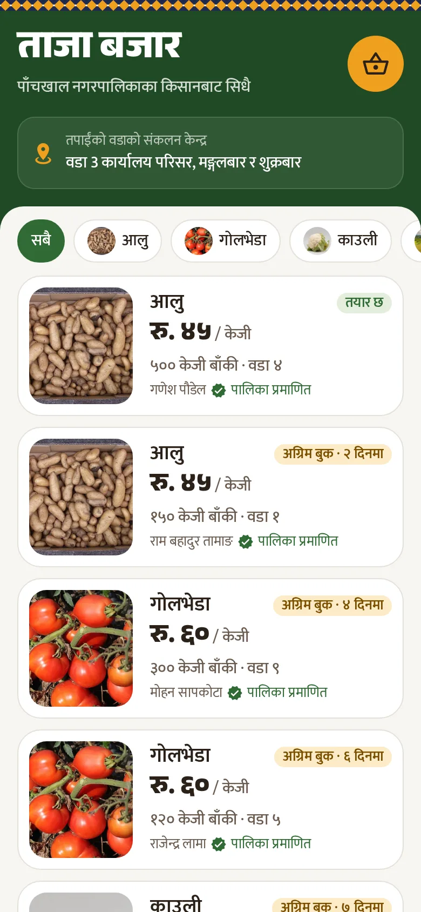
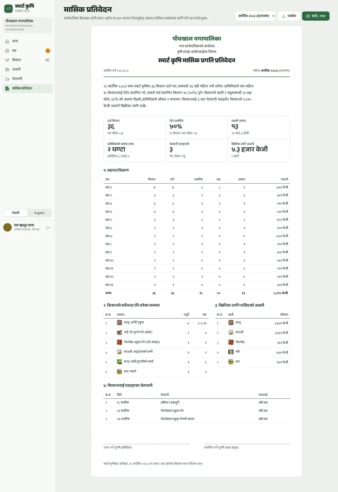
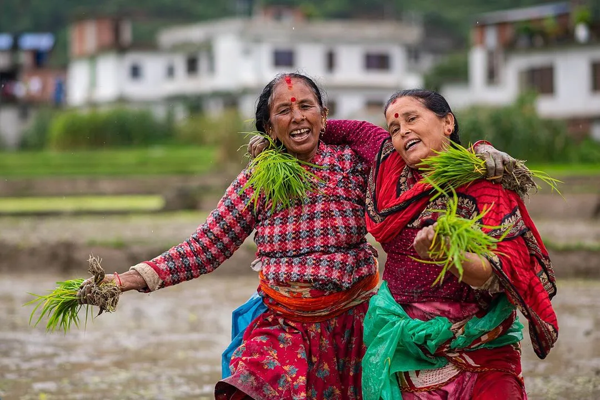

किसानको मेहनत बारीमै कुहिन नदिऔं।
A farmer’s work should not rot in the field.
रोगको सल्लाह ढिलो आउँछ, उब्जनी बिचौलियाको हातबाट सस्तोमा जान्छ, र पालिकासँग आफ्ना किसानको भरपर्दो सूची हुँदैन। स्मार्ट कृषिले किसान, पालिका र खरिदकर्तालाई एउटै सूत्रमा जोड्छ।
Advice on disease arrives late, harvests leave cheap through middlemen, and the Palika has no reliable list of its own farmers. SmartKrishiAI joins the farmer, the Palika and the buyer in one chain.

सरकारी तथ्याङ्कमाIn government figures
देशमा ४१ लाख किसान परिवार छन्। प्रमाणित सूचीमा ९ लाख पनि पुगेका छैनन्।Nepal has 4.1 million farm households. Fewer than 0.9 million are on a verified list.
देशको कुल गार्हस्थ्य उत्पादनमा कृषिको हिस्सा, २०८२/८३of Nepal’s GDP comes from agriculture, 2025/263
किसान परिवार, एक जना कार्यरत स्थानीय कृषि प्राविधिकको भागमा (हिसाब)farm households for each working local agriculture technician (calculated)1 4
रुपैयाँको तरकारी एक वर्षमा आयात, २०८१/८२rupees of vegetables imported in one year, 2024/256
पहिले र अबBefore and after
बारीदेखि भान्सासम्म, बीचका हात घट्छन्From field to kitchen, with fewer hands in between
- किसानFarmerरोगमा अनुमानले औषधिsprays by guesswork
- संकलकCollectorमूल्य उसैले तोक्छsets the price
- थोक बजारWholesale marketढुवानीमा कुहिन्छspoils on the way
- खुद्रा पसलRetailerथप नाफाadds a margin
- उपभोक्ताBuyerमहँगोमा किन्छpays more
- पालिका-प्रमाणित किसानPalika-verified farmerAI डाक्टर र वडा प्राविधिकको सल्लाहadvised by the AI doctor and ward technician
- वडाको संकलन केन्द्रWard pickup pointतोकिएको दिन, ताजैon set days, fresh
- उपभोक्ता, होटल, व्यापारीHouseholds, hotels, tradersपैसा सिधै किसानलाईpay the farmer directly
भक्तपुरको एक अध्ययनमा गोलभेडा उपभोक्ताले किलोको रु. ७५ तिर्दा किसानले रु. ४० मात्र पाए।In one Bhaktapur study, buyers paid Rs 75 a kilo for tomatoes and the farmer received Rs 40.7
किसानFarmer
- पहिलेBefore
- पातमा दाग देखियो, सल्लाह कहाँ सोध्ने थाहा छैन। अनुमानमै औषधि छर्यो; बाली वा पशु गुम्यो।
- Spots on the leaves and nobody to ask. Sprays by guesswork; loses the crop or the animal.
- अबNow
- फोटो खिच्छ वा बोल्छ। AI डाक्टरले तुरुन्तै सल्लाह दिन्छ, वडा प्राविधिकले हेरेर पुष्टि गर्छ।
- Takes a photo or just speaks. The AI doctor answers at once and the ward technician checks and confirms.
पालिकाPalika
- पहिलेBefore
- कुन वडामा कति किसान, के लगाउँछन्, कागजमा छरिएको। अनुदान र राहत अनुमानमा बाँडिन्छ।
- Which ward farms what lives on scattered paper. Subsidy and relief go out on guesswork.
- अबNow
- भेटेर प्रमाणित गरिएको किसान दर्ता, वडागत तथ्याङ्क, र कार्यपालिका बैठकका लागि मासिक प्रतिवेदन एकै ठाउँमा।
- A farmer registry verified in person, ward-level figures, and the monthly report for the executive meeting, all in one place.
खरिदकर्ताBuyer
- पहिलेBefore
- होटल र घरपरिवार बिचौलियाबाट महँगोमा किन्छन्; कहाँ, कसले उब्जायो थाहा हुँदैन।
- Hotels and households pay a markup to middlemen and never know who grew it.
- अबNow
- पालिकाले प्रमाणित गरेको किसानबाट सिधै किन्छन्, वडाको संकलन केन्द्रबाट लिन्छन्। एपले पैसा राख्दैन।
- Buy straight from farmers the Palika has verified and collect at the ward pickup point. The app never holds the money.
एप र पोर्टलThe app and the portal
पढ्न-लेख्न नजान्ने किसानले पनि चलाउन सक्नेSimple enough for a farmer who does not read or type
टाइप होइन, बोल्नुहोस्Speak, don’t type
किसानले आफ्नै शब्दमा एकपटक भन्छन्: नाम, वडा, जग्गा, बाली र पशु। AI ले बुझेर फाराम आफैं भर्छ; किसानले हेरेर ठीक छ भन्छन्।
The farmer says it once in their own words: name, ward, land, crops and animals. The AI fills the form; the farmer checks it and saves.
स्मार्टफोन नभएका किसानलाई वडा कार्यालयले नै दर्ता गरिदिन्छ र उब्जनी बेचिदिन्छ।
Farmers without a smartphone are registered by the ward office, which can also list their harvest for sale.

आफ्नै बाली र पशुको मात्र कुराOnly their own crops and animals
गृहपृष्ठमा त्यही देखिन्छ जुन किसानलाई चाहिन्छ: उनले लगाएको बालीमा रोगको चेतावनी, आजको मौसम र के गर्ने भन्ने एक वाक्य। बाली वा पशु डाक्टर एक थिचाइमा।
The home screen shows only what this farmer needs: disease alerts for the crops they grow, today’s weather and one sentence on what to do. The crop and animal doctor are one tap away.

ताजा बजार, किसानबाट सिधैA fresh market, straight from farmers
उपभोक्ता, होटल र व्यापारीले पालिका-प्रमाणित किसानको उब्जनी हेर्छन्, अग्रिम बुक गर्छन्, र वडाको संकलन केन्द्रबाट लिन्छन्। भुक्तानी किसान र खरिदकर्ताबीच सिधै हुन्छ।
Households, hotels and traders browse harvests from Palika-verified farmers, book ahead, and collect at the ward pickup point. Payment goes directly between farmer and buyer.

पालिकाका लागि, प्रतिवेदन आफैं तयारFor the Palika, the report writes itself
कृषि शाखाले किसानको प्रश्नको जवाफ, चेतावनी पठाउने र दर्ता प्रमाणित गर्ने काम एउटै पोर्टलबाट गर्छ। महिनाको अन्त्यमा वडागत प्रतिवेदन छाप्न वा एक्सेलमा लिन तयार हुन्छ।
The agriculture section answers farmers, sends alerts and verifies registrations from one portal. At month end the ward-by-ward report is ready to print or export to Excel.

सुरु गर्नुहोस्Get started
तपाईं को हुनुहुन्छ?Who are you?
